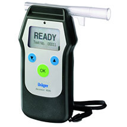

Предрейсовая комиссия и послерейсовая комиссия
Предрейсовая комиссия и послерейсовая комиссия – это обязательная процедура, закрепленная соответствующими законодательными актами. Ее обязаны проходить все профессиональные водители перед выходом в рейс.
Важность предрейсового медосмотра водителей
Предрейсовая медицинская комиссия, проводимая специалистами наших центров, позволяет не только выявить водителя, находящегося в состоянии алкогольного или наркотического опьянения, но и дает возможность получать оперативные сведения о состоянии его здоровья.
Проведение предрейсовых медицинских осмотров позволяет в значительной мере уменьшить риск ДТП. Ведь от того, в каком состоянии человек окажется за рулем, зависит не только его собственное здоровье и жизнь, но и благополучие его коллег и пешеходов. Доверяя проведение предрейсовой комиссии профессионалам, Вы в значительной мере сокращаете риск финансовых потерь в случае автотранспортных происшествий, и заботитесь о безопасности движения на дорогах. Помните: проведение предрейсовых осмотров водителей служит гарантом Вашего спокойствия.
Послерейсовая комиссия также очень важна. Она проводится для получения важной информации о состоянии здоровья водителя после маршрута, что в сочетании с данными предрейсовой комиссии позволяет оценить многие важные показатели состояния здоровья водителя. Это может быть обострение хронических заболеваний, скорость утомляемости, изменение частоты сердечных сокращений и т.д.
Предрейсовые и послерейсовые осмотры водителей в ЭкспрессМедСервис
Прохождение предрейсового медицинского осмотра должно проводиться опытными высококвалифицированными специалистами, способными сразу распознать малейшие нарушения состояния здоровья водителей. Именно такие сотрудники работают в наших медицинских центрах. Современное оборудование и внимательный медперсонал – что еще нужно для прохождения предрейсового осмотра?